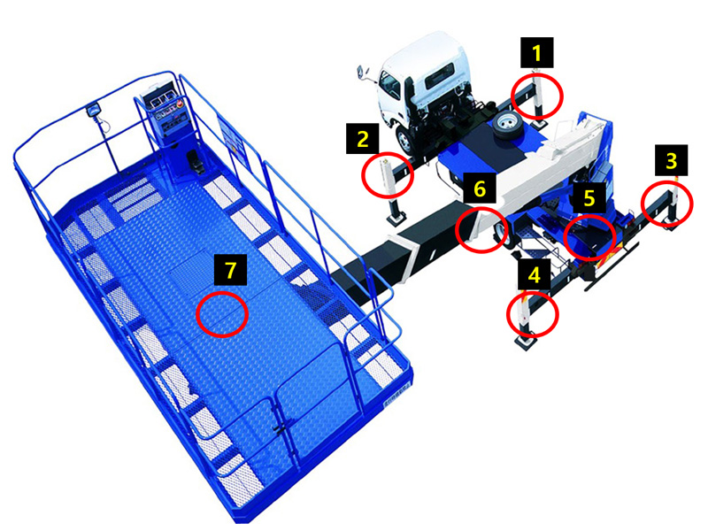

The aerial work platform is a specially designed vehicle for safe elevated
operations.
Key sensors installed to ensure the vehicle's safe functioning are as
follows:
Sensors 1 to 4 consist of length sensors for stable support and proximity
sensors to verify the support status. (Greater support length allows the vehicle
to operate safely at higher heights.)
Sensor 5 is an encoder measuring the current angle of the platform, indicating
angles on the XY plane.
Sensor 6 includes a length sensor for determining the work length and a
gyroscope incline sensor for measuring angles on the XZ plane.
Sensor 7 incorporates a load cell to precisely measure the working weight. These
sensors, integrated with others, calculate and control the vehicle's operations
precisely, ensuring safe operations based on the vehicle's state.
